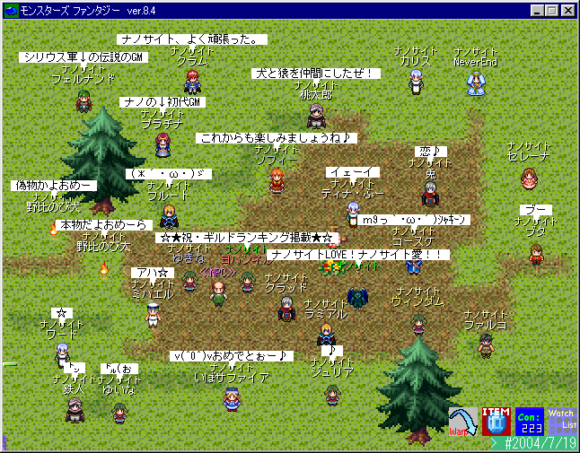
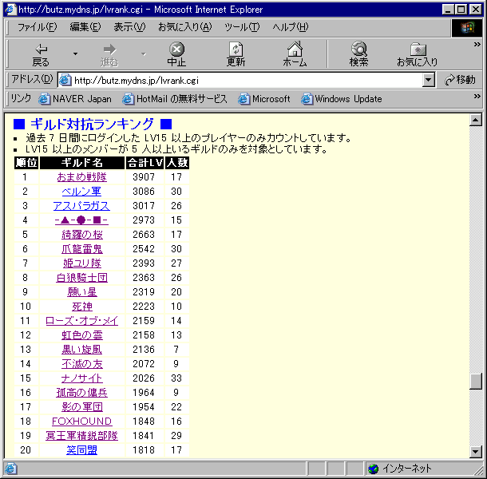

第2回写真撮影会 2004/7/19
|
ナノサイトがMF公式HPのギルドランキング上位に上がり、 ギルド名が掲載された事を祝って撮影されたメンバー集合写真です。 やはりこれだけの方が集まってくれるという事は 立派に成長したんですねｗ(7月17日から7月31日まで 2週間もの間ナノサイトが全ギルド中最多人数でした) これからもナノの繁栄を願って頑張りましょう♪ |
|  |
| 以前の3倍以上の人数で写真を撮ることができました。ありがとうございました♪ |
|  |
| 7月31日午前8時のギルドランキングです。ちなみにナノサイトは過去最高位9位でした。 |
| ｢NANOCITES｣ Web Master:ヨハンソン |